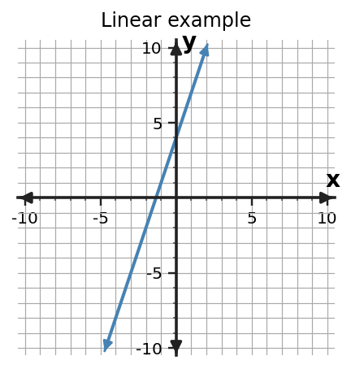
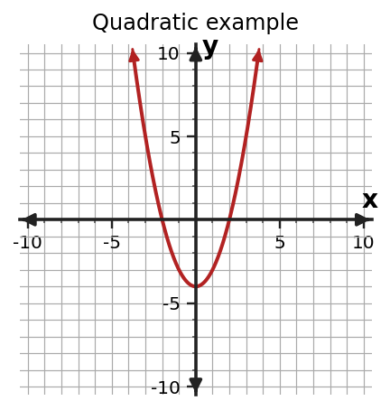
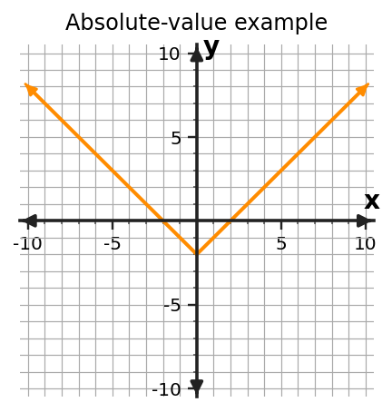
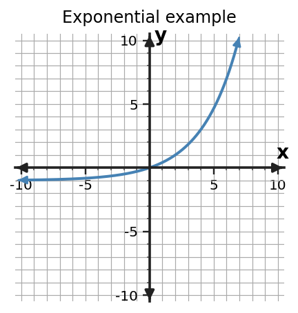

Different families leave different fingerprints in their change and shape.
Use the worked supports after students have attempted each task. Keep discussion focused on reasoning and representation connections.
Section Introduction
Look for the fingerprint of change
Function families are not just graph shapes. Each family has characteristic evidence in tables, equations, graphs, and situations.
Linear relationships add the same amount over equal input steps. Exponential relationships multiply by the same factor. Quadratic and absolute-value relationships have their own patterns and shapes.
Use more than one clue whenever possible instead of naming a family from appearance alone.
Vocabulary / Key Notation Preview
linear · quadratic · exponential · absolute value · function family
Sort the vocabulary. Write each vocabulary word in the column that best matches what you know right now. You may move a word later.
| Know for sure | Recognize | Don't know yet |
|---|---|---|
Section Preview
Skim before close reading. Look at the headings, tables, graphs, and examples. Find 1–2 things you notice and 1–2 things you wonder about.
| What I noticed | |
|---|---|
| What I wonder |
Close Reading Directions
READ IN SHORT CHUNKS. Annotate the words and visuals together. Underline evidence, circle or highlight bold vocabulary, label arrows or important features, connect sentences to tables and graphs, and jot short questions or connections in the margins. Use these directions through the What's To Come section and the reading that follows.
What's To Come
PREVIEW / DECOMPOSE. Use the connected parts to see where this section is headed. Annotate the representations and prompts as you work.
Use the shared table for every part.
| x | y |
|---|---|
| 0 | 3 |
| 1 | 6 |
| 2 | 12 |
| 3 | 24 |
Part (a)
Compute useful change evidence from one row to the next.
Part (b)
Decide which function family best matches the table: linear, quadratic, exponential, or absolute value.
Part (c)
Use the pattern to predict the output when x=4.
Part (d)
Explain how the change evidence from part (a) supports your family choice and prediction.
Consecutive ratios are 2. The pattern is exponential. At x=4 the output is 48. A constant factor of 2 supports the family choice and prediction.
I Can 1Recognize a linear pattern from constant rate.
A linear relationship has a constant additive rate of change. For equal changes in input, the output changes by the same amount.
In a table with input steps of 1, subtract consecutive outputs. With other input steps, compare $\Delta y/\Delta x$. On a graph, a constant rate appears as a straight line.
The sign of the rate tells direction: positive rates rise as input increases, while negative rates fall.
| x | y |
|---|---|
| 0 | 4 |
| 1 | 7 |
| 2 | 10 |
| 3 | 13 |
First differences: $+3,+3,+3$. Rate $=3$.

Connect the operation or feature back to the relationship you are describing.
Example 1: Find a constant rate
Is the table linear? Find the rate.
| x | y |
|---|---|
| 1 | 10 |
| 3 | 16 |
| 5 | 22 |
Yes. $(16-10)/(3-1)=3$ and $(22-16)/(5-3)=3$, so the constant rate is 3.
You Try It 1: Find a constant rate
Determine whether the outputs 18, 14, 10, 6 for inputs 0,1,2,3 show a linear pattern. State the rate.
Yes. The output changes by -4 for each input step, so rate is -4.
Stop and Discuss
- What must be true about input steps before you compare raw output differences?
- How does a negative rate appear on a graph?
- Why does constant rate support a linear classification?
- Listen for: students naming the mathematical feature, not only the answer
- Listen for: students using values, operations, or structure as evidence
I Can 2Notice basic quadratic, exponential, and absolute-value shapes or patterns.
Other function families have different signatures. A basic quadratic graph bends into a U or upside-down U, while an absolute-value graph has a sharp V-shaped turn.
An exponential pattern changes by a common multiplicative factor over equal input steps. Its growth can become increasingly rapid rather than adding a constant amount.
Use shape as a clue, then look for supporting structure in a table or equation. The goal is recognition with evidence, not memorizing pictures by themselves.
Quadratic

Absolute Value

Exponential

Pattern clue
Quadratic: curved U-type shape.
Absolute value: V-shaped turn.
Exponential: common factor over equal input steps.
Connect the operation or feature back to the relationship you are describing.
Example 2: Recognize a family pattern
Outputs are 2, 6, 18, 54 for inputs 0,1,2,3. Which family is most likely, and what pattern supports the choice?
Exponential; each output is multiplied by 3.
You Try It 2: Recognize a family pattern
A graph has a sharp V-shaped turn and rises on both sides. Which family is most likely?
Absolute value. The V-shaped graph is the key family clue.
Stop and Discuss
- How is a quadratic turn different from an absolute-value turn?
- What table evidence suggests an exponential relationship?
- Why should graph shape be supported by another clue when possible?
- Listen for: students naming the mathematical feature, not only the answer
- Listen for: students using values, operations, or structure as evidence
I Can 3Use a table, graph, equation, or context as evidence.
Evidence for a family can come from any representation. Tables reveal differences or ratios, graphs reveal shape, equations reveal structure, and contexts describe how quantities change.
For example, a rule with a variable multiplied by a constant, such as $y=5x+2$, is linear. A rule with the variable in an exponent points toward an exponential family.
Use the representation you have, but state the actual feature you observed. Naming a family without naming evidence is only a guess.
Equation evidence
$y=6x-1$: x is first power and rate is constant → linear.
$y=4(2)^x$: x is in exponent → exponential.
Table evidence
| x | y |
|---|---|
| 0 | 5 |
| 1 | 10 |
| 2 | 20 |
| 3 | 40 |
Common ratio 2 → exponential.
Connect the operation or feature back to the relationship you are describing.
Example 3: Use representation evidence
Use the equation $y=(x-1)^2+2$ as evidence to name the most likely family.
Quadratic. The variable expression is squared.
You Try It 3: Use representation evidence
A quantity increases by 8 units every 2 minutes. Which family is most likely if that rate stays constant? Explain.
Linear. Equal input changes produce equal additive output changes; rate is 4 units per minute.
Stop and Discuss
- Which representation makes rate easiest to see?
- What equation feature points toward an exponential family?
- How can a context supply family evidence without a graph?
- Listen for: students naming the mathematical feature, not only the answer
- Listen for: students using values, operations, or structure as evidence
I Can 4Explain why one family is more likely than another.
A complete family explanation has two parts: a classification and evidence. Write the family name, then connect a visible pattern or structure to that family.
When two families seem possible, test a distinguishing feature. Constant first differences favor linear; constant ratios favor exponential; a V-shaped graph favors absolute value; a smooth U-shaped basic graph favors quadratic.
Use cautious language when the data are limited. Say a family is 'most likely' when you have enough evidence to support it but not enough information to prove a unique model.
Claim: The relationship is most likely exponential.
Evidence: For equal input steps, outputs 7, 14, 28, 56 have a constant ratio of 2 rather than a constant difference.
Connect the operation or feature back to the relationship you are describing.
Example 4: Defend a family choice
Outputs are 1, 4, 9, 16 for inputs 1,2,3,4. Explain which family is most likely.
Quadratic. The outputs are square numbers $x^2$, and their first differences 3,5,7 are not constant.
You Try It 4: Defend a family choice
A graph has a straight decreasing line. Explain which family is most likely and name one additional piece of evidence you could check.
Linear. A straight line suggests constant rate. Check equal-step table differences or compute slope between two pairs of points.
Stop and Discuss
- What separates a classification from an explanation?
- When should you say “most likely” instead of claiming certainty?
- Which family clues are easiest to confuse, and how can you distinguish them?
- Listen for: students naming the mathematical feature, not only the answer
- Listen for: students using values, operations, or structure as evidence
Vocabulary Reference
| Term | Meaning in this section |
|---|---|
| linear | a family with a constant additive rate of change |
| quadratic | a family whose graph has a U-shaped or upside-down U-shaped curve in basic cases |
| exponential | a family that changes by a constant multiplicative factor over equal input steps |
| absolute value | a family with a V-shaped basic graph |
| function family | a group of functions that share characteristic structure or change |
Section Summary
- Linear patterns have constant additive rate of change.
- Exponential patterns have a constant multiplicative factor over equal input steps.
- Quadratic and absolute-value families have recognizable structures and graph shapes.
- A family claim should be supported with evidence from the given representation.
What I Understand Now
Write one connection you can now make among the ideas in this section. Use a specific value, representation, algebra step, or vocabulary word as evidence.
Common Mistakes to Watch
| Mistake | What to remember |
|---|---|
| Classifying only by graph shape | Support the choice with table changes, equation structure, or context as well as shape. |
| Confusing quadratic and exponential growth | Quadratic change is not a constant multiplier; exponential patterns multiply by a common factor over equal input steps. |